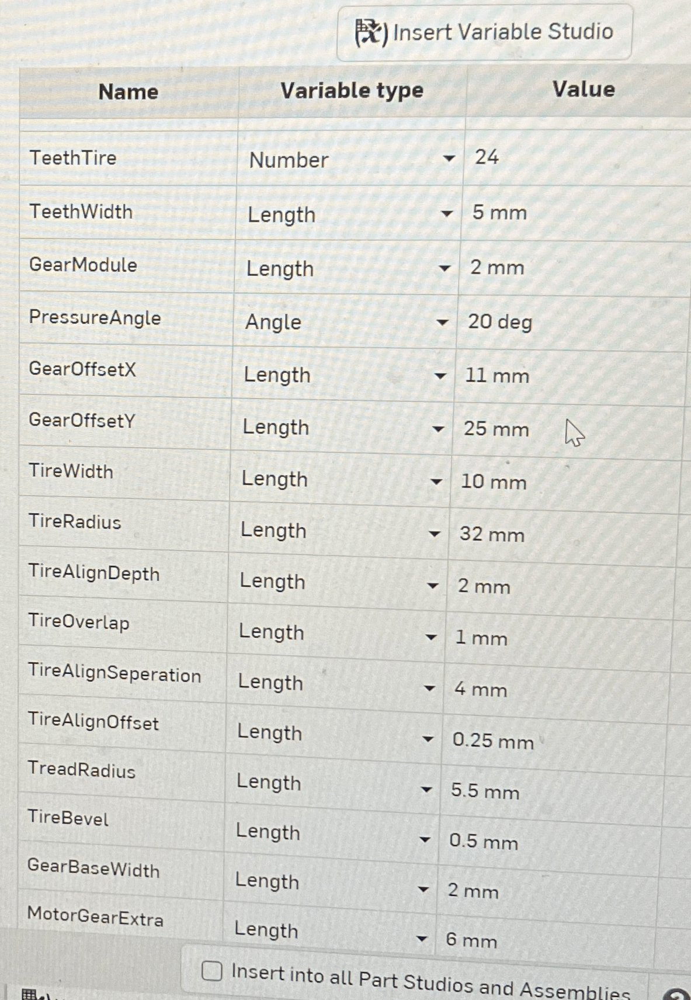
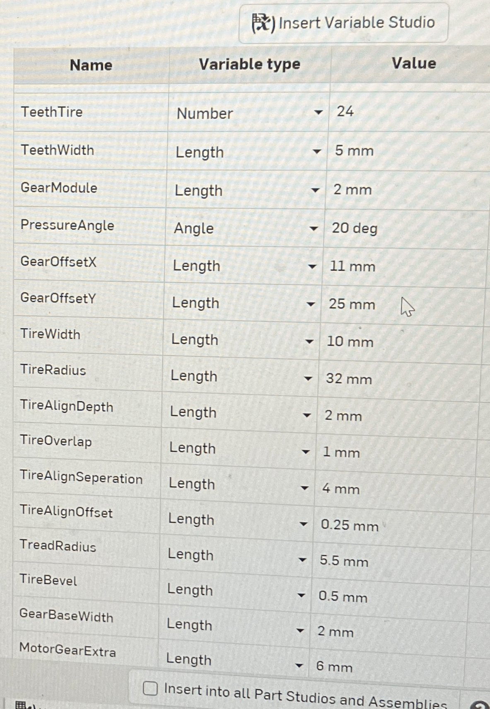
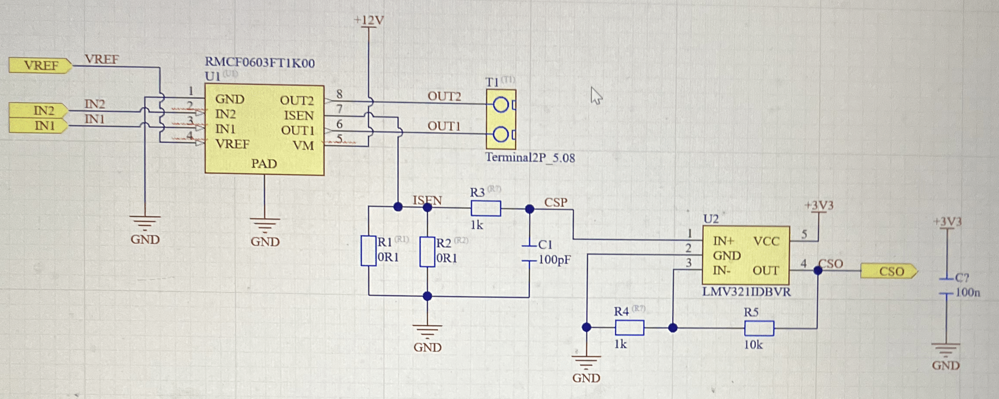
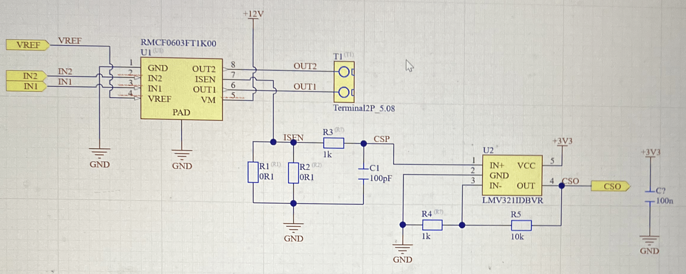

MASLAB Team 5
Miguel Flores-Acton, Anshul Gupta, Andy Yu, Advay Goel
The first version of the wheel assembly is made on OnShape.
The first iteration of the robot base is made and the new wheel assembly design is tested.

Different bearing mounts and example blocks are made in CAD. We start getting familiar with OnShape variables.


 

The gate mechanism was made and animated in OnShape.

The schematic for the custom PCB is drafted. KiCAD is eventually chosen over Altium.
 

The peripherals are configured and the pins are assigned.